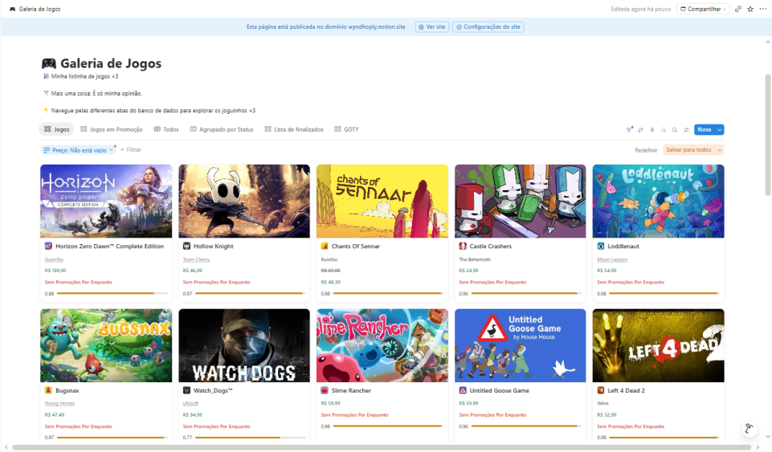

Sobre Mim
Eu sou Iarly Gabriel de Araújo, tenho 20 anos e atualmente estou estudando para me tornar Programador Full-Stack através do projeto Autonomia e Renda, uma parceria entre o SENAI e a Petrobras.
Antes disso, estudei Cybersegurança, mas acabei desistindo por não me identificar com a área e pela dificuldade que tive durante o curso. Apesar disso, foi essa experiência que me fez perceber que o que eu realmente queria era programar.
Trabalhar com tecnologia sempre foi um sonho. Desde pequeno eu adorava ver códigos e ficava tentando entender o que cada linha fazia, mesmo sem saber programar. Hoje continuo sendo assim: gosto de testar, quebrar a cabeça, errar um monte de vezes e ir descobrindo como tudo funciona.
Passar para o projeto Autonomia e Renda foi uma oportunidade enorme para mim, e tenho dado o meu melhor para aprender cada vez mais e conseguir entrar na área como Dev. Ainda tenho muito o que aprender, mas isso é justamente uma das coisas que mais gosto na programação: sempre existe algo novo para descobrir, quebrar a cabeça e interpretar utilizando de base o que eu já sei.
No fim das contas, eu me divirto programando. Gosto de brincar com o código, testar ideias e entender como cada pedacinho funciona até conseguir traduzir tudo para a minha própria lógica. Isto tudo é DIVERTIDO.
Habilidades
Ainda estou no início da minha jornada como desenvolvedor, mas já construí uma base que me permite aprender com facilidade e enfrentar novos desafios.
- Conhecimento básico em Python e lógica de programação.
- Desenvolvimento em HTML e CSS, criando páginas e landing pages.
- Noções de JavaScript, principalmente através da leitura, interpretação e adaptação de códigos.
- Uso de Git e GitHub para versionamento de projetos, resolução de conflitos e colaboração em equipe.
- Facilidade para identificar erros e encontrar soluções, tanto em códigos próprios quanto de outras pessoas.
- Experiência ajudando colegas da minha ilha no curso, resolvendo problemas relacionados ao Git, GitHub e outras dificuldades técnicas.
- Interesse e facilidade em resolver problemas de software e hardware no dia a dia, buscando entender a causa antes de aplicar uma solução.
Mais do que decorar linguagens, gosto de entender como as coisas funcionam. Quando encontro um problema, normalmente minha primeira reação é investigar, testar possibilidades e aprender com o processo até encontrar uma solução
Projetos
Integração Steam → Notion:
Desenvolvi um projeto que automatiza o cadastro de jogos em uma página do Notion utilizando apenas a Game ID da Steam. O sistema consulta uma API para obter informações como nome do jogo, preço, avaliação, gêneros, empresa desenvolvedora, descrição e promoções, preenchendo automaticamente os campos da página. Durante o desenvolvimento utilizei ferramentas de IA como apoio, mas foi necessário compreender a lógica do código, corrigir diversos erros e adaptar a integração até que funcionasse corretamente.

"Aprendi que integrar APIs não é apenas consumir dados, mas
entender como diferentes serviços se comunicam e resolver os
problemas que surgem durante esta comunicação."
Objetivo: Automatizar o cadastro de informações de jogos da Steam em uma página do Notion utilizando apenas a Game ID, evitando o preenchimento manual de dados jogo por jogo.
Tecnologias Utilizadas:
- Javascript
- API de integração entre Steam e Notion
Maior Desafio: Implementar uma lógica para identificar quando um jogo estava em promoção. Quando isso acontecia, o sistema alterava automaticamente a exibição dos preços no Notion: o preço original passava a aparecer em cinza e um novo campo com o preço promocional era criado e preenchido.
O que Aprendi: Mesmo tendo experiência apenas com Python, consegui interpretar e adaptar códigos em JavaScript para atender às necessidades do projeto. Durante o desenvolvimento, aprendi a compreender como uma API fornece e organiza seus dados, interpretar códigos escritos por outras pessoas, testar soluções e corrigir erros até chegar ao resultado esperado. Desde então eu venho utilizado esse aprendizado no meu dia a dia para aprender cada vez mais outras linguagens, como atualmente HTML e logo logo CSS.